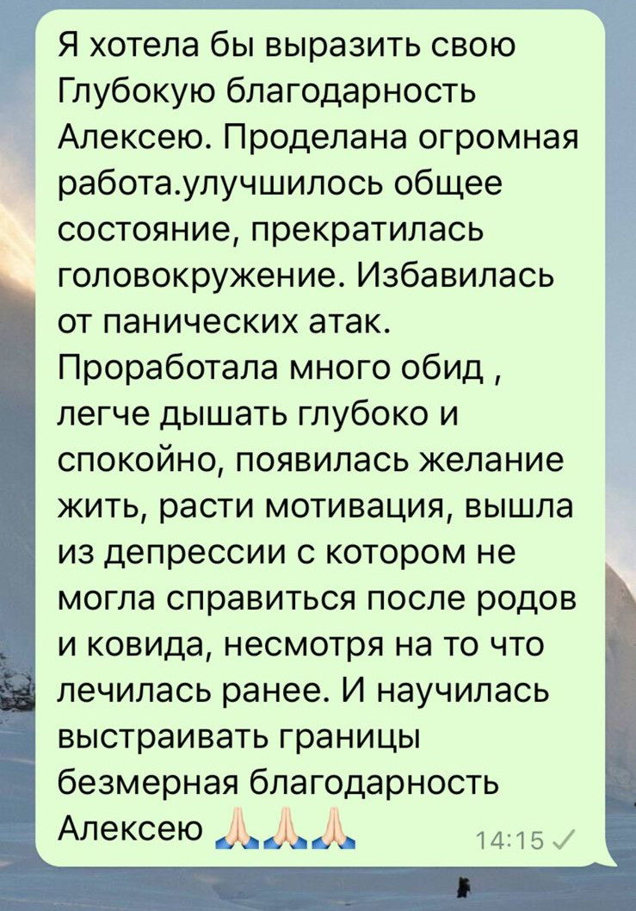

Подсознание как хранилище опыта и автоматических реакций
-
Подсознание — это скрытая часть нашего разума, которая работает как огромный архив. В нём хранятся все переживания, эмоции, установки и автоматические реакции. Именно подсознание определяет, как мы реагируем на мир, иногда даже не осознавая этого.
Например, если в прошлом ты испытал(а) страх в замкнутом пространстве, подсознание запоминает это как угрозу. Теперь каждый раз, когда ты попадаешь в похожую ситуацию, тело автоматически реагирует: учащается сердцебиение, поднимается давление, ты чувствуешь тревогу. Эта связь эмоций и тела формируется на уровне подсознания.
-
Подсознание тесно связано с чувствами. Оно формирует ассоциации: определённые события или мысли вызывают эмоции, а эмоции запускают физические реакции.
Например, если ты однажды испытал(а) тревогу на мосту, подсознание закрепляет эту эмоцию. Теперь при любом воспоминании о мосте тело реагирует так, словно ты в опасности: мышцы напрягаются, начинается одышка, усиливается сердцебиение.
-
Подсознание действует быстро и не требует твоего сознательного участия. Оно связывает эмоции, вызванные триггером, с физическими ощущениями, готовя тебя к действиям. Важно понимать, что это защитный механизм, но он может работать некорректно, вызывая дискомфорт без реальной угрозы.
Например, неприятный запах может подсознательно напомнить о каком-то болезненном моменте из прошлого. Ты можешь не осознавать этого, но твоё тело уже отреагирует: появится тошнота, напряжение или тревога. Так подсознание связывает чувства с физикой, защищая тебя от возможной угрозы.
А сейчас я попрошу тебя включить образное мышление...
Представь, что у тебя дома постоянно пищит пожарная сигнализация🚨🚨🚨, которая включается без
причины, не давая спать и жить спокойно.
Ты бегаешь в темноте, нажимаешь на все кнопки, ищешь решение в интернете, вызываешь мастеров, но она
всё равно продолжает тревожить тебя.
Ты пытаешься её отключить, вызываешь специалистов, но никто не находит корень проблемы.
А потом появляется человек, который сразу указывает на ошибку и устраняет её.
Вот так же я помогаю разобраться с твоей «внутренней сигнализацией», которая по ошибке запускает тревогу и страх. 🤝🤝🤝
Самое замечательное, что тебе больше не нужно терять годы жизни в поисках решения, бегать по врачам или глотать таблетки с побочными эффектами.
Теперь пора перейти к реальным действиям и пошагово освоить метод, который избавит тебя от паники навсегда.
Метод по шагам